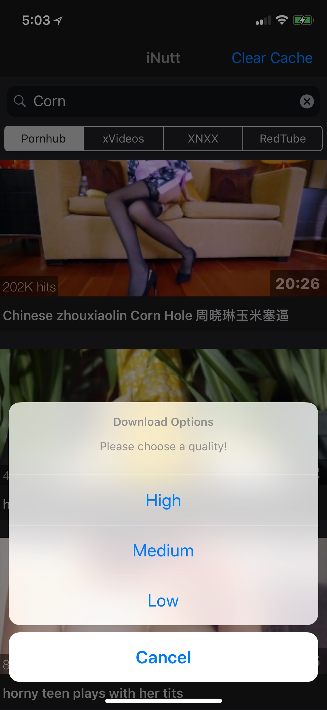
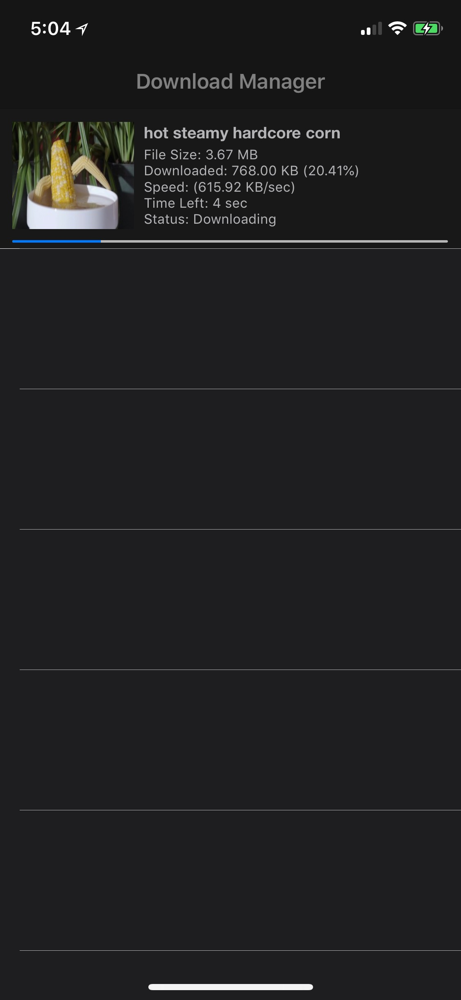
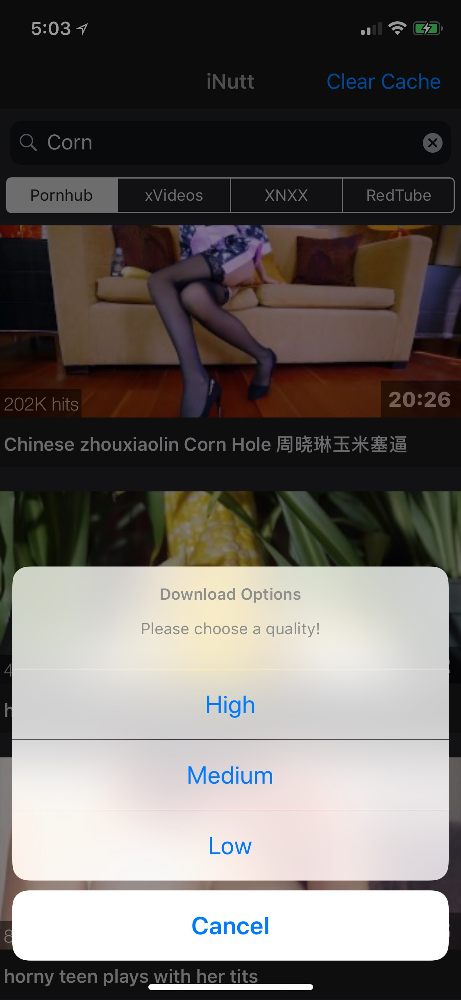
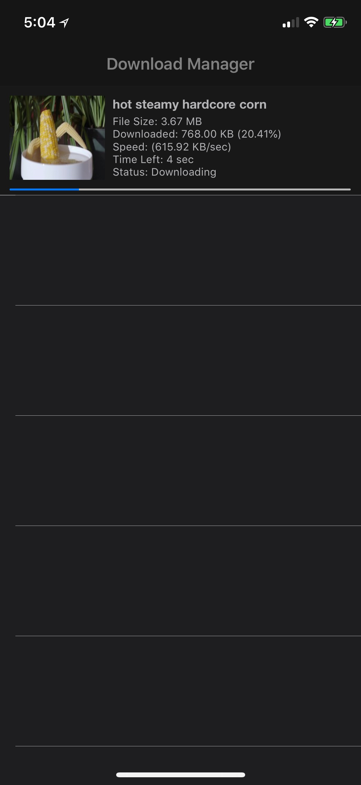
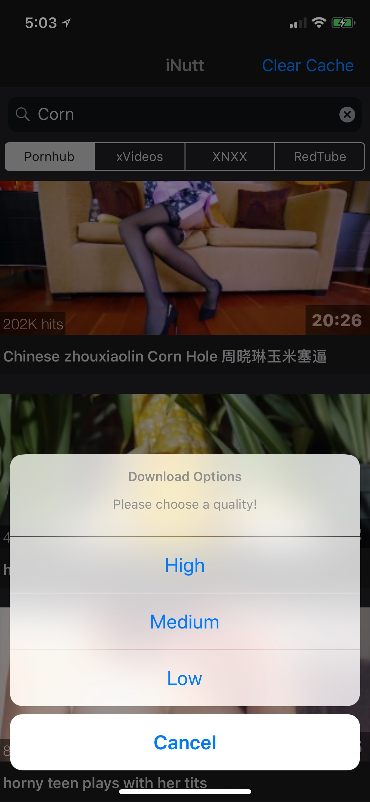
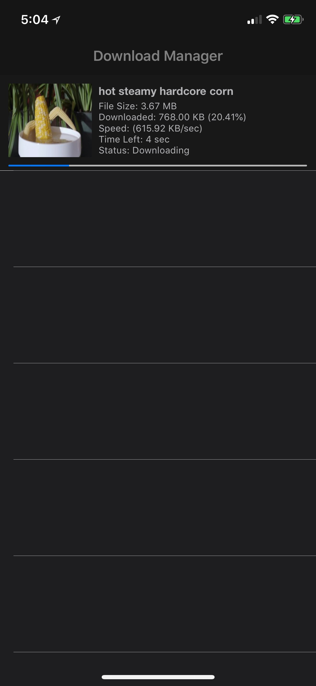
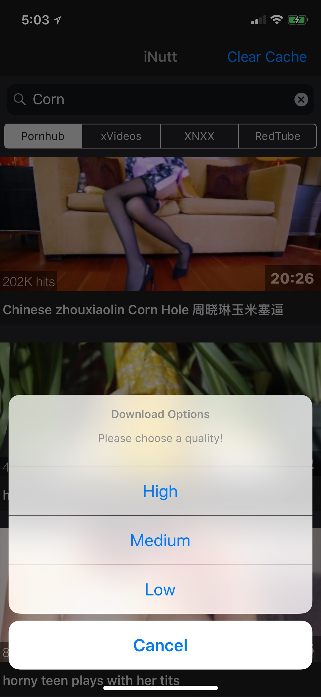
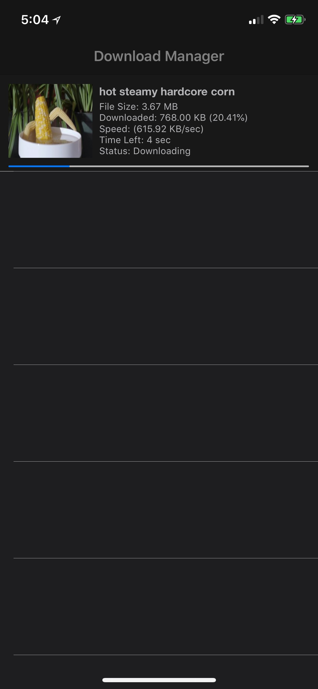

Search/download corn from four different corn sites.
Option to hide the app behind a game is coming very soon!
iOS 9+
Fixed blue bar after dismissing ad
Fixed ability to dimiss ad if it was not loaded
Can now delete 'missing' downloaded videos
Note: Try a respring after opening the app. May fix downloads not playing after finishing dl.
 






